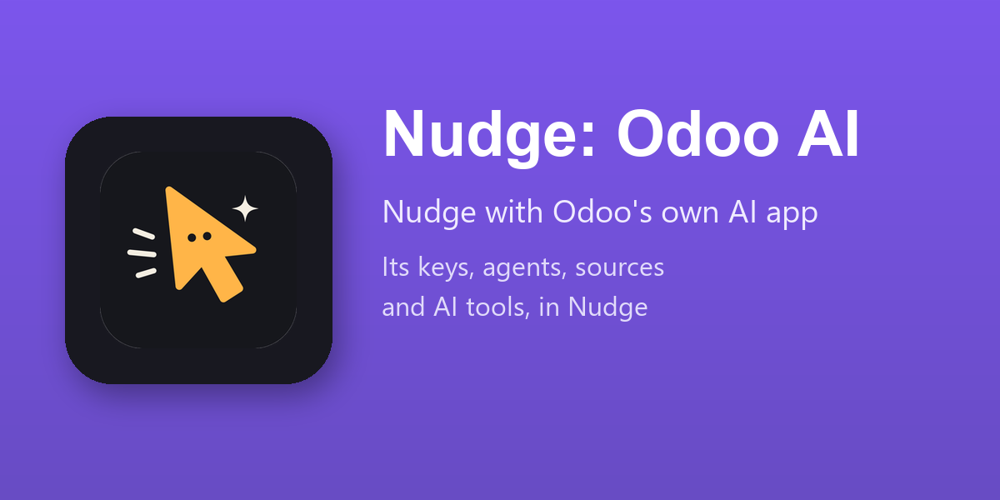

Requires Odoo Enterprise (ai).

The documents, links and articles given to the AI agents as sources are searched by Nudge when it answers, for the people who may read them. What a source holds is read as data, never as instructions.
What the agents are told, their instructions and their topics, is told to Nudge too, so that the company's own guidance applies in every conversation.
The server actions marked Use in AI are at the agent's hand, each one shown to the person on a card before it runs, like every action of Nudge: nothing runs before a yes.
A Nudge provider can take the key set in the AI app. The key stays where Odoo keeps it: Nudge reads it when it calls the provider and never shows it.
Installed by itself where Nudge and the AI app of Odoo 19 Enterprise are both installed. Nothing to configure: open a provider under Nudge ‣ Configuration ‣ AI Providers and set API Key From to the Google or the OpenAI key of the AI app when you want to share it.
Everything else is Nudge: the same rights, the same confirmations, the same log.